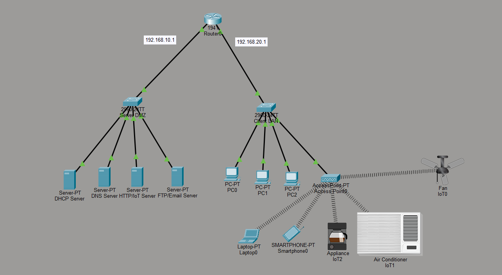
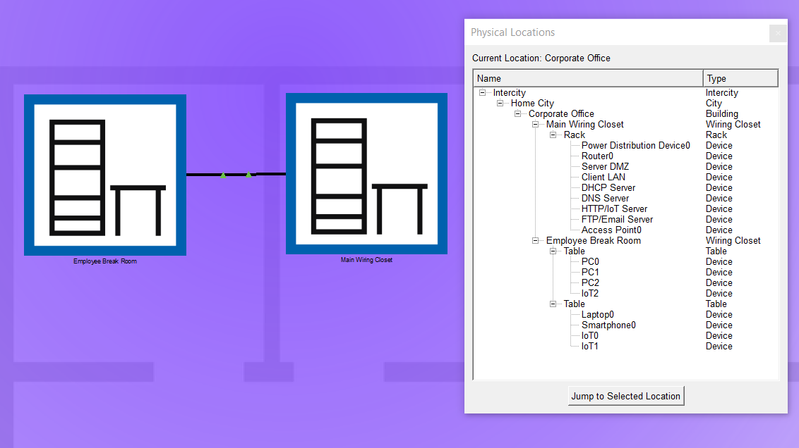
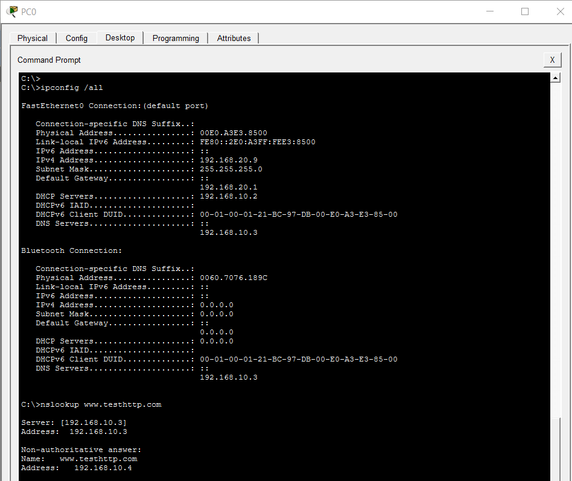
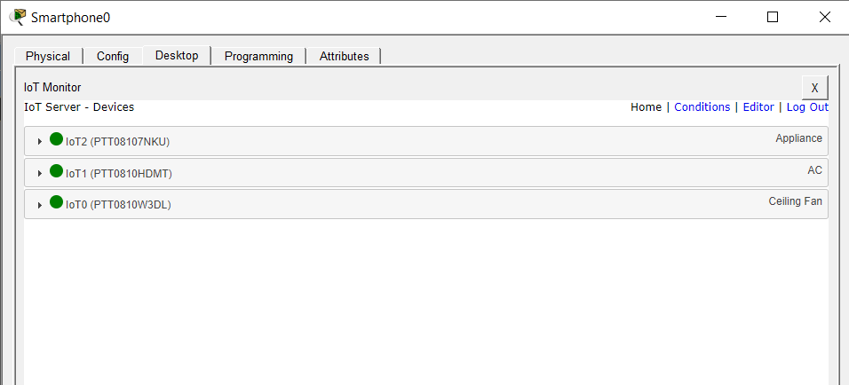

Real enterprise networks are not a single subnet with a few clients on it. They are structured tiers — a protected service layer behind a firewall boundary, a user layer that consumes those services, and a routing gateway that governs the flow of traffic between them. The separation exists for a reason: a compromised employee workstation should not be able to reach the DNS server directly, and an exploited public-facing service should not be able to pivot into user data.
This engagement designs and simulates that multi-tier architecture from scratch in Cisco Packet Tracer. The topology spans two physical locations and two isolated logical subnets, provisioned with a full service farm — DHCP, DNS, HTTP/IoT, FTP/Email — plus a wireless IoT fabric serving break-room devices across the subnet boundary. The goal is a production-grade layout that demonstrates how routing, DHCP relay, and centralized services cooperate to deliver usable infrastructure without collapsing the security boundary between tiers.
All work was performed in Cisco Packet Tracer. The architecture follows patterns that
transfer directly to physical enterprise deployments — tier separation, IP
Helper-Address relay, and centralized service hosting — but no physical hardware was
provisioned. The sandbox .pkt file, setup guides, and configuration
scripts are published in the linked repository.
Layer-3 Subnet Architecture & Routing Gateway
The design begins by splitting the infrastructure into two logical tiers, each on its own subnet. This is the foundational decision that everything else follows from — the subnets are the security boundary, and the router that connects them is the policy enforcement point.
- Server DMZ — 192.168.10.0/24. The service tier. Hosts the DHCP, DNS, HTTP/IoT and FTP/Email servers. Isolated from user clients at Layer 3, so an exploited workstation cannot reach the servers directly — traffic must traverse the router, where policy can be applied.
- Employee Client LAN — 192.168.20.0/24. The user tier. Hosts wired workstations plus the Access Point that serves laptops, smartphones, and IoT devices (fan, air conditioner, appliance) across the wireless fabric.
-
Cisco 1941 routing gateway. Sits at the head of both subnets, with
192.168.10.1on the DMZ interface and192.168.20.1on the client interface. Every packet crossing between the tiers passes through this device — the natural location for future ACL enforcement, IDS inspection, and traffic accounting.
Both subnet interfaces were provisioned with their correct masks and brought into active state. The router now has a complete Layer-3 picture: two directly-connected networks, two gateway addresses, and full routing knowledge of how to move traffic between them. Every downstream service and client configuration in this engagement depends on this foundation being correct.

192.168.10.1 on the Server DMZ interface and
192.168.20.1 on the Client LAN interface. The DMZ hosts four dedicated
service nodes (DHCP, DNS, HTTP/IoT, FTP/Email), while the client side feeds wired
workstations and a wireless Access Point serving laptops, smartphones, and IoT
devices across the break-room fabric.
Cross-Subnet DHCP Relay & Core Service Farm
With the subnets defined, the next design problem is service delivery. Clients on the Employee LAN need IP addresses, and the authoritative DHCP server lives on the DMZ — separated from them by the router. This is one of the classic problems in enterprise networking, and its standard solution is a mechanism many administrators configure without fully understanding.
Why DHCP alone can't cross a subnet boundary
DHCP is a broadcast-based protocol. When a client first joins a network
with no address configured, it sends a DHCPDISCOVER packet to the broadcast
address 255.255.255.255 — a message with no specific destination, hoping
some device on the local segment will respond. That works fine when the DHCP server is on
the same subnet, because broadcast stays local. But broadcast packets do not cross router
boundaries by design — that's precisely what makes them safe on a segmented network. So
a client on 192.168.20.0/24 broadcasting for DHCP cannot reach a server on
192.168.10.0/24 through the router, because the router (correctly) drops the
broadcast at the boundary.
The IP Helper-Address solution
The standard remediation is a directive on the router's client-facing interface called IP Helper-Address. It tells the router: "when you receive a DHCP broadcast on this interface, stop treating it as broadcast — convert it to a unicast packet addressed specifically to this IP, and forward it on." That single directive bridges the two subnets for DHCP traffic only, without opening the door to any other broadcast traffic.
! Client LAN interface — relay DHCP broadcasts to the DMZ server
Router>enable
Router#configure terminal
Router(config)#interface GigabitEthernet0/1
Router(config-if)#ip helper-address 192.168.10.2
Router(config-if)#exit
The address 192.168.10.2 is the DHCP server on the DMZ subnet. With this
directive in place, the router accepts DHCP broadcasts from clients on the LAN side and
unicasts them to the DHCP server across the subnet boundary. The server processes the
request, sends a response back to the router, and the router delivers the assigned
address to the requesting client. From the client's perspective, DHCP works — but it works
because the router is performing the relay.
The centralized service farm
The DMZ hosts four dedicated service nodes, each providing one function to the enterprise:
- DHCP Server — provides dynamic address allocation to clients on the Employee LAN, delivering the client's IP, subnet mask, default gateway, and DNS server address through the relay mechanism described above.
-
DNS Server — resolves human-readable names (like
www.testhttp.com) to destination IPs. Because clients can only reach the DNS server through the router, DNS queries cross the subnet boundary on every resolution — a natural point of visibility for later monitoring. - HTTP/IoT Server — hosts the web application that serves the IoT management interface. The smartphone and laptop on the client side access this server's web UI to view telemetry and control the break-room devices.
- FTP/Email Server — provides file transfer and mail services, rounding out the standard enterprise service farm.
Centralizing the services in the DMZ rather than distributing them across each subnet is the correct enterprise pattern for three reasons: single source of truth for each service, consistent policy enforcement at the router, and a clean architecture for later scaling — new subnets added to the environment can consume the same services through additional IP Helper-Address directives, without reconfiguring anything on the server side.
Physical Security Zones & IoT Telemetry Fabric
The final design dimension is physical. Enterprise architecture is not just about logical topology — it's about where the equipment physically lives, and what physical security boundary separates high-value infrastructure from end-user spaces. Packet Tracer models this through its Physical Workspace view, which separates devices into distinct geographic zones.
The topology was laid out across two zones that mirror the real-world physical layout of a corporate office:
- Main Wiring Closet. Houses the Cisco 1941 router, the Server DMZ switch, and all four service servers. This is the secured location — in a physical deployment it would be a locked room with restricted access, environmental controls, and a separate power feed. Devices here are the ones an attacker would most want to reach, and the ones a well-designed physical security policy most tightly protects.
- Employee Break Room. Houses the Access Point, wired workstations, and the wireless devices (laptop, smartphone, IoT fan, IoT air conditioner, IoT appliance). This is the user-populated space — physically accessible to anyone who walks into the office, which is exactly why the network boundary between this zone and the wiring closet matters. Physical access does not imply logical access.
Within the break room, the wireless Access Point broadcasts an SSID that serves all three client device types — laptops, smartphones, and IoT endpoints. The IoT devices represent a distinct class of network consumer: they are always-on, often have minimal security capabilities, and generate a low-volume but continuous stream of telemetry data. Segmenting them properly — either on their own VLAN or behind an IoT-aware access policy — is a standard hardening technique for modern enterprise deployments, and this lab lays the groundwork for that segmentation by giving IoT devices their own address assignment path through the same DHCP relay mechanism.
The IoT management application runs on the HTTP/IoT server in the DMZ. When a user on the client side opens their browser and navigates to the server's web interface, the request crosses the router boundary, the server processes it, and the response returns across the same path — the same route the IoT devices themselves use when reporting telemetry. Every device in the break room reaches its management interface through the same tier-crossing architecture that delivers DHCP, DNS, and every other service.

Performance Verification
Two live diagnostic passes confirm the architecture behaves as designed — first an endpoint-level audit of DHCP allocation and DNS resolution, then a full IoT telemetry test from the break room's wireless fabric.
Cross-subnet DHCP allocation and DNS resolution
The first verification pass runs from a client on the Employee LAN. The
ipconfig /all output confirms the client received a fully-formed address
assignment through the DHCP relay across the subnet boundary — including an address
inside the client subnet (192.168.20.9), the correct mask, the gateway on
the client-facing router interface (192.168.20.1), and the DMZ-hosted
DHCP and DNS server addresses (192.168.10.2 and 192.168.10.3).
The subsequent nslookup resolves the internal hostname
www.testhttp.com to 192.168.10.4 — the HTTP/IoT server on the
DMZ — through the DNS server on the opposite subnet:

ipconfig /all output
shows the client received a full DHCP lease across the subnet boundary — address
192.168.20.9, gateway 192.168.20.1, and DMZ-hosted DHCP and
DNS servers at 192.168.10.2 and 192.168.10.3. The subsequent
nslookup resolves www.testhttp.com to
192.168.10.4 (the HTTP/IoT server) with zero packet loss.
Wireless IoT telemetry across the subnet boundary
The second verification pass runs from the smartphone on the break-room wireless fabric. Its browser connects to the HTTP/IoT server's management interface, and the IoT Monitor dashboard renders three connected devices — an appliance, an air conditioner, and a ceiling fan — all reporting healthy status through the wireless link, the Access Point, the client LAN switch, the router, and finally the DMZ server hosting the management application:

- Dynamic IP allocation succeeded across subnet borders. The client on the Employee LAN received a complete DHCP lease — address, mask, gateway, and DNS server — from a DHCP server located on a different subnet. This confirms the IP Helper-Address relay is functioning correctly and the subnet boundary is not blocking legitimate service delivery.
-
DNS name resolution mapped local names with 0% packet loss. The
nslookupofwww.testhttp.comresolved to192.168.10.4through the DMZ-hosted DNS server. Name resolution crossing the router boundary with zero loss proves the routing path is clean in both directions — queries outbound, responses inbound — which is the foundational requirement for every subsequent application-layer service. - IoT telemetry fabric operational across the tier boundary. All three break-room IoT devices reported healthy status to the DMZ-hosted management dashboard. Every update traversed the wireless link, the Access Point, the client LAN switch, the router, and the DMZ switch — five distinct hardware hops in each direction — without any device dropping offline.
- Physical and logical security boundaries aligned. The zone layout confirms that high-value infrastructure (servers, router) is physically housed in the wiring closet, while user-facing and IoT devices are in the break room. Logical tier separation is mirrored by physical separation — the pattern that enterprise security frameworks require for defense in depth.
Multi-tier enterprise architecture confirmed operational. Two isolated subnets, a functioning Layer-3 gateway, a cross-subnet DHCP relay, a centralized service farm, and a wireless IoT fabric all cooperate to deliver complete enterprise services with zero packet loss. The architecture is now ready for the natural next steps — VLAN segmentation within each subnet, ACL enforcement at the router, IDS inspection of inter-tier traffic, and expansion to additional physical sites — without requiring any redesign of the foundation.
Security & Data Privacy Note
The configuration presented here reflects an isolated lab simulation. Production deployments of this architecture typically layer additional controls on top of the design — per-subnet VLANs to segment the client tier, ACLs at the router restricting which DMZ services are reachable from which client subnets, IoT-aware access policies separating always-on devices from user workstations, DHCP snooping to prevent rogue servers, and administrative access restrictions on router management interfaces. Those controls are documented as recommended next steps but are outside the scope of this lab exercise.